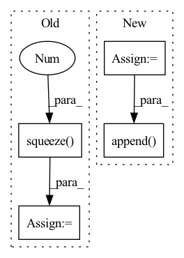

Pattern ID :121

Before Change
// Back to batch first
attn_scores = torch.stack(attn_scores).transpose(0, 1)
mel_outputs = torch.stack(mel_outputs).transpose(0, 1).contiguous()
stop_tokens = torch.stack(stop_tokens).transpose(0, 1).squeeze(2)
// (B, T", mel_dim*r) -> (B, T, mel_dim)
mel_outputs = mel_outputs.reshape(B, -1, self.mel_dim)
After Change
// Project to mel
// (B, mel_dim*r) -> (B, r, mel_dim)
output = self.mel_proj(proj_input)
output = output.view(B, -1, self.mel_dim)
// Stop token prediction
stop = self.stop_proj(proj_input)
stop = torch.sigmoid(stop)
// Store predictions
mel_outputs.append(output)
attn_scores.append(attention_score.unsqueeze(1))
stop_tokens.extend([stop] * self.r)
if greedy:
In pattern: SUPERPATTERN
Frequency: 3
Non-data size: 4
Instances
Fragment ID: 519071
Project Name: thuhcsi/tacotron
Commit Name: fea9ec535ec373aad564646f4f292fbee0217c29
Time: 2021-03-18
Author: johnson.tsing@gmail.com
File Name: model/tacotron2.py
M Class Name: Decoder
N Class Name: Decoder
M Method Name: forward(4)
N Method Name: forward(4)
M Parent Class: nn.Module
N Parent Class: nn.Module
M File Name: model/tacotron2.py
N File Name: model/tacotron2.py
M Start Line: 127
M End Line: 224
N Start Line: 127
N End Line: 216
'>
Before Change
// Back to batch first
attn_scores = torch.stack(attn_scores).transpose(0, 1)
mel_outputs = torch.stack(mel_outputs).transpose(0, 1).contiguous()
stop_tokens = torch.stack(stop_tokens).transpose(0, 1).squeeze(2)
// (B, T", mel_dim*r) -> (B, T, mel_dim)
mel_outputs = mel_outputs.reshape(B, -1, self.mel_dim)
After Change
// Project to mel
// (B, mel_dim*r) -> (B, r, mel_dim)
output = self.mel_proj(proj_input)
output = output.view(B, -1, self.mel_dim)
// Stop token prediction
stop = self.stop_proj(proj_input)
stop = torch.sigmoid(stop)
// Store predictions
mel_outputs.append(output)
attn_scores.append(attention_score.unsqueeze(1))
stop_tokens.extend([stop] * self.r)
if greedy:
'>
Fragment ID: 519070
Project Name: thuhcsi/tacotron
Commit Name: fea9ec535ec373aad564646f4f292fbee0217c29
Time: 2021-03-18
Author: johnson.tsing@gmail.com
File Name: model/tacotron.py
M Class Name: Decoder
N Class Name: Decoder
M Method Name: forward(4)
N Method Name: forward(4)
M Parent Class: nn.Module
N Parent Class: nn.Module
M File Name: model/tacotron.py
N File Name: model/tacotron.py
M Start Line: 87
M End Line: 187
N Start Line: 88
N End Line: 180
'>
Before Change
else:
gru_output, h_n = self.rnn(x.unsqueeze(1), h_n)
// output dim: BSx1 and Squeeze sequence length after completing GRU step
x = self.fc_resnet(gru_output.squeeze(1))
// normalize by frame-rate: 25.0 for VIPL
// x = x*25.0
batched_output_per_clip.append(x.squeeze(0))
After Change
gru_output, h_n = self.rnn(output_seq.unsqueeze(1))
// gru_output = gru_output.squeeze(1)
for i in range(gru_output.size(0)):
hr = self.gru_fc_out(gru_output[i, :, :])
// // hr = hr * 25.0
hr_per_clip.append(hr.flatten())
output_seq = torch.stack(hr_per_clip, dim=0).permute(1,0)
// return output_seq, gru_output.squeeze(0), fc_out
return output_seq, output_seq.squeeze(0)[:6]
'>
Fragment ID: 519069
Project Name: anweshcr7/rhythmnet
Commit Name: 0f9fc9b96933c04f723fbfa5b80cdf1a398828c3
Time: 2021-03-14
Author: anwesh.marwade@beyondsports.nl
File Name: src/models/rhythmNet.py
M Class Name: RhythmNet
N Class Name: RhythmNet
M Method Name: forward(3)
N Method Name: forward(3)
M Parent Class: nn.Module
N Parent Class: nn.Module
M File Name: src/models/rhythmNet.py
N File Name: src/models/rhythmNet.py
M Start Line: 33
M End Line: 56
N Start Line: 33
N End Line: 64